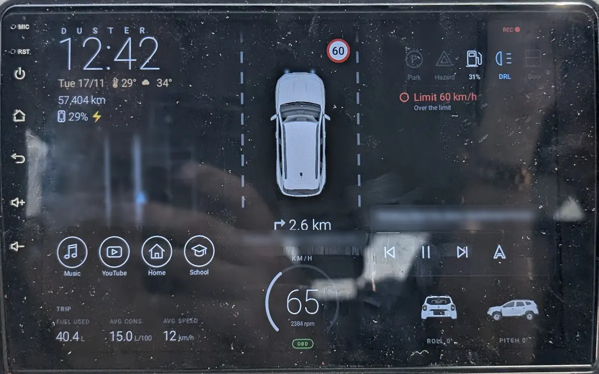
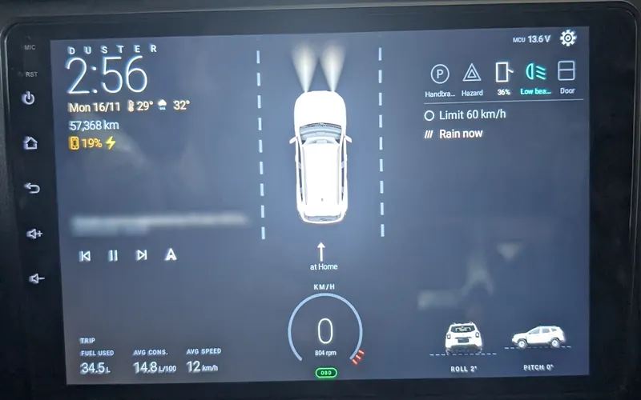
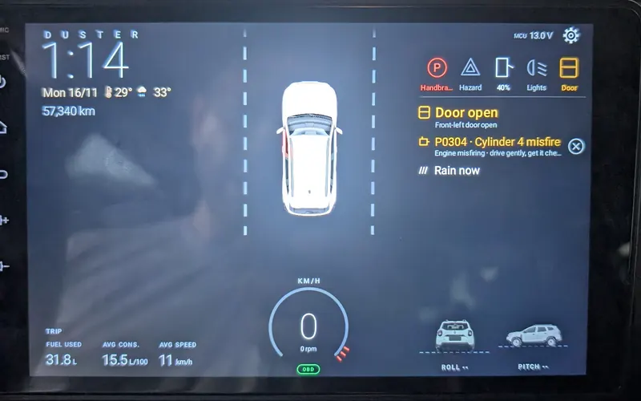
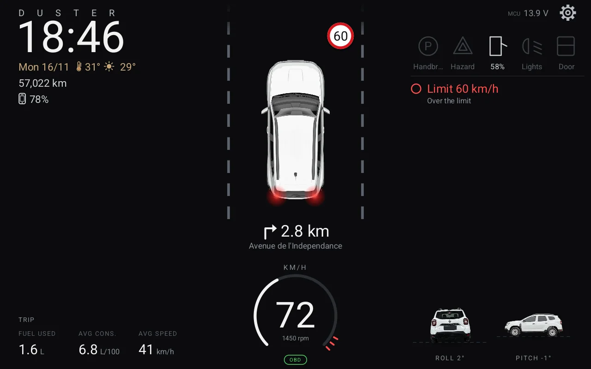
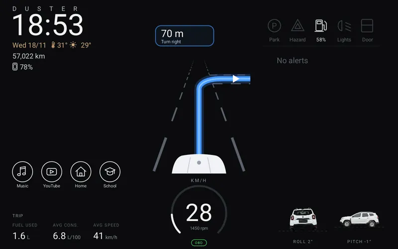
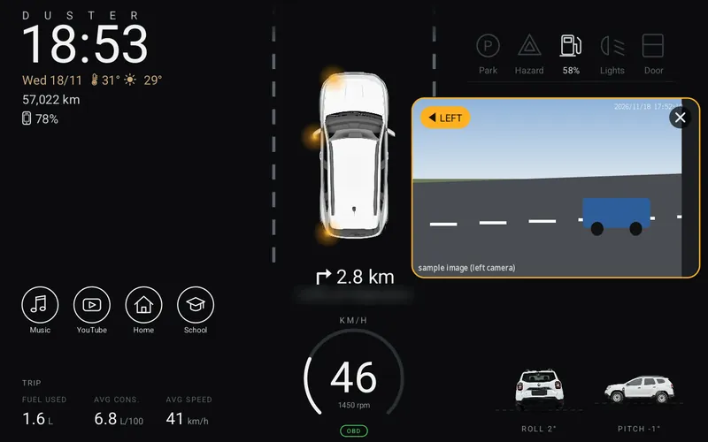
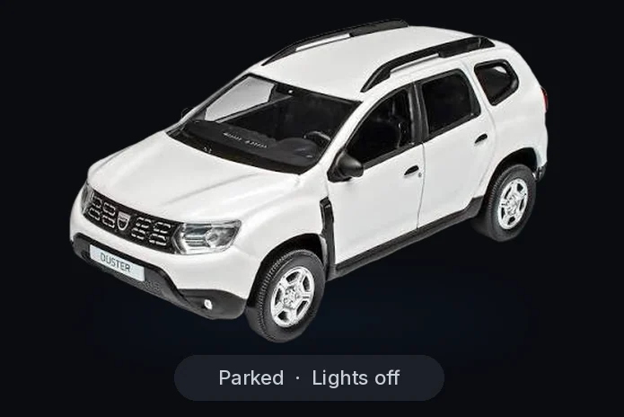
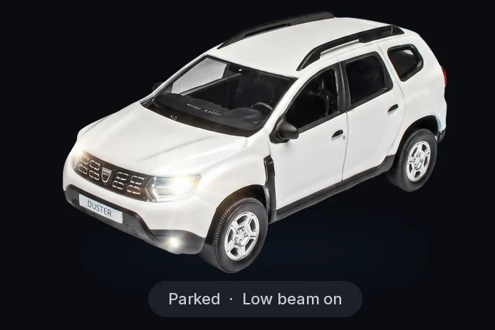

For Renault / Dacia Duster
Turn your Duster's screen into a live digital dash.
Duster Dash reads your car's own data (doors, lights, handbrake, fuel, range, speed) and puts it on one clear screen, with a speed-limit alert, next-turn panel and media controls.
Free trial: just your name and email, no card. Then $9.99 for a license code to keep it.
- Android head unit, 1280 × 800
- Runs on 1 GB RAM
- Hiworld CAN box for live car data
- ELM327 OBD supported

Running in a real Duster
Not just mockups: here it is on the road
Phone photos of Duster Dash on a Duster's head unit, cropped and straightened. Glare, dust and reflections are real; street names, song and video titles are blurred for privacy.


Duster Dash features
Everything on one screen
Duster Dash is an Android dashboard / HOME launcher for Dacia / Renault Duster head units. The screens in this section are clean mockups with sample data, so each feature is easy to see.
Your Duster, live
Reads the car's own data and shows it on a large, clear dash.
- Live car data from the Hiworld CAN box: doors, lights, handbrake, hazards, fuel %, range, trip stats
- OBD (ELM327) support: speed, RPM, outside temperature, battery voltage
- Large speedometer with RPM

Music and map, side by side
Media controls next to a turn-by-turn panel.
- Media card with playback controls (Spotify / Bluetooth), placed left or right of the map
- Turn-by-turn next-turn panel with an offline mini map (OpenStreetMap)
- Shortcut buttons (Music, YouTube, Home, School...)

Speed limit and brake lights, at a glance
See your limit and your car's lights without hunting.
- Speed-limit sign and over-limit alert
- Car top-view with lights / brake state
- Roll / pitch display

Make it yours
Full settings, built into the dash.
- Display sizes
- Night dimming
- Custom volume indicator
- Alerts, service reminders and phone pairing

Trip computer
Fuel used, average consumption and average speed.
Shortcut buttons
Music, YouTube, Home, School and more, one tap from the dash.
Light on RAM
Built for 1 GB head units.
Service consoles
A license also unlocks OBD and CAN service consoles, protected by a PIN.
In testing
Coming next: hood view and dashcam picture-in-picture
These two features are in the latest test builds but have not been fully tested on the car yet, so they may change. The images are rendered previews, not photos.


Watch
The tour in 28 seconds
The opening shots are AI-generated illustrations. The app screens that follow are mockups with sample data.
Duster Companion (phone app)
Your car's status in your pocket
The Android phone app that shows your car's status, synced from the dash over Bluetooth / Wi-Fi.
- "My Duster" screen: fuel %, range, inside temperature, odometer, battery voltage, last trip
- Live car photo that shows the light state (off, DRL, low beam)
- Sends phone navigation, media and notifications to the dash
- Shortcuts and settings tabs




What you need
Made for the Duster head unit
With an Android head unit
The screen resolution Duster Dash is designed for
Light on memory: built for 1 GB head units
- Hiworld CAN box: live car data (doors, lights, handbrake, hazards, fuel %, range, trip stats) comes from it.
- ELM327 OBD adapter: adds speed, RPM, outside temperature and battery voltage.
- Android phone (for Duster Companion): synced from the dash over Bluetooth / Wi-Fi.
Not sure your head unit fits? Try it free before you pay anything.
How it works
Install it, try it free, then keep it
- Get the download. Enter your name and email to unlock the Duster Dash APK (and the Duster Companion APK for your phone). Phone / WhatsApp and your car details are optional.
- Install on the head unit. Open the APK on the head unit (download it there, or copy it over by USB). If Android asks, allow installs from this source.
- Try everything free for 14 days. Tell us what works and what doesn't.
- Keep it for $9.99. Buy a license code to keep using it after the trial. A license also unlocks OBD/CAN service consoles (PIN-protected).
FAQ
Questions
What do I need to use Duster Dash?
A Renault / Dacia Duster Android head unit with a 1280x800 screen. Duster Dash is built for 1 GB units. For live car data (doors, lights, handbrake, hazards, fuel, range, trip stats) it reads the Hiworld CAN box; OBD (ELM327) support adds speed, RPM, outside temperature and battery voltage.
How does the free trial work?
Enter your name and email, download, and try everything free for 14 days. If you want to keep using it after that, buy a license code for $9.99. A license also unlocks OBD/CAN service consoles (PIN-protected). No payment details are asked for to start the trial.
Can I just buy it without trying?
Yes. Use the Buy now button to get your license code for $9.99.
Why do you ask for my name and email?
So we can contact you about Duster Dash (your trial, feedback, and when a license is available). Phone / WhatsApp, car model and year, and head unit are optional. We don't share your details.
What is Duster Companion?
An Android phone app that shows your car's status (fuel %, range, inside temperature, odometer, battery voltage, last trip), synced from the dash over Bluetooth / Wi-Fi. It also sends phone navigation, media and notifications to the dash.
Are the screenshots real?
The photos in "Running in a real Duster" are real phone photos of Duster Dash on a Duster's head unit (cropped, straightened, and with street, song and video titles blurred). The feature screens and the Companion screens are rendered mockups from development with sample data (speed, fuel, odometer, track titles).
Where do I send feedback?
Use the feedback link. We'd love to hear what works and what doesn't.
Ready to try your Duster's new dash?
Free for 14 days. Then $9.99 to keep it.